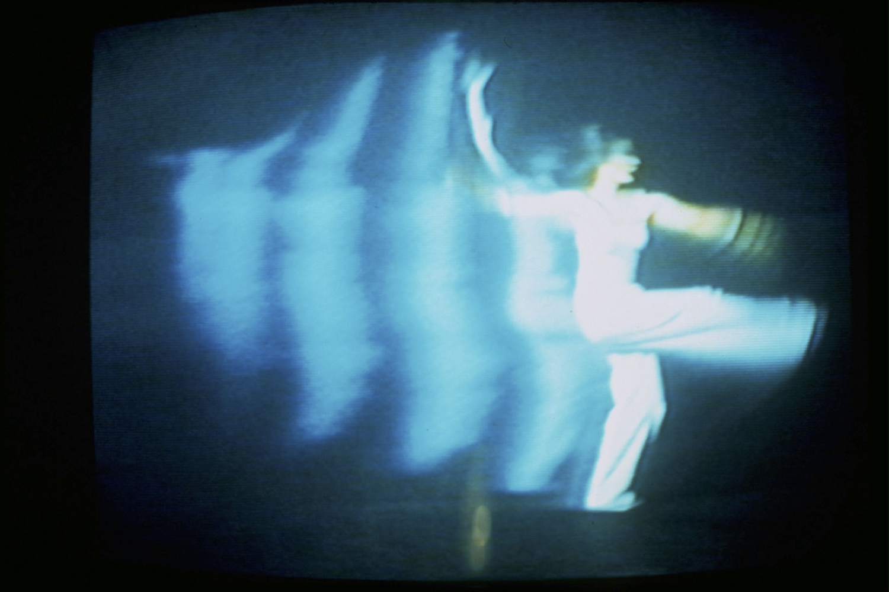
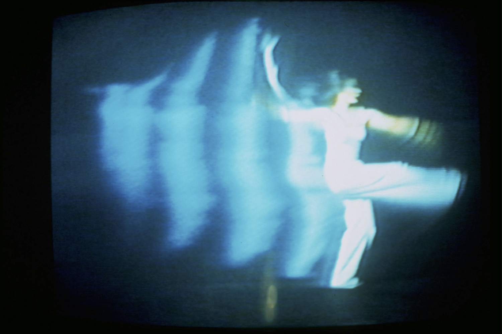

The online exhibition "Beyond Boundaries: The Digital Architecture of Human Connection" delves into the creative spirit of net art, showcasing works that challenge traditional notions of space, communication, and the relationship between humans and technology. Here, the real and the virtual come together to invite viewers to explore through carefully selected pieces. The chosen works, which cover a number of decades, offer an interesting discussion on the transformative potential of digital media.
This exhibition examines at how, in the digital era, net art creates new relationships. Robert Adrian's 1982 feature "THE WORLD IN 24 HOURS" breaks down geographical borders by connecting audiences worldwide through live communication. Through real-time video conferencing, "MOBILE IMAGE" (1975 - Ongoing) by Kit Galloway, Sherrie Rabinowitz, and Collaborators crosses boundaries of space and promotes a feeling of global community. Last but not least, Jon Rafman's "NINE EYES OF GOOGLE STREET VIEW" (2008 - Ongoing) blurs the boundaries between virtual and real by using digital pictures to link viewers to actual areas. To further this investigation of interconnectivity, Tsunamii.net's "ALPHA 3.4" (2002) invites viewers to explore a virtual world where the lines between reality and cyberspace are blurred by plunging them into the depths of the digital ocean. The artwork inquires ideas about digital identity, connectedness, and the way people experience in the age of technology through captivating graphics and interactive aspects. These works, though they take different techniques, all show how net art has the power to forge new connections and alter our understanding of the world, sparking a change toward a more compassionate and linked global community.
Even though each piece of art takes a different approach to connecting, they are all fascinated by the possibilities that technology presents. "THE WORLD IN 24 HOURS" serves as both a historical landmark and a window into a future in which global communication in real time becomes the norm. With a more interactive style, "MOBILE IMAGE" encourages viewers to actively participate and form connections over great distances. By using the digital eye to see the unexpected beauty and secret stories concealed inside our real world, "NINE EYES OF GOOGLE STREET VIEW" takes a more mindful approach. A web browser called Webwalker 2.2, which needed the user to travel to the physical location of a specified web server, was at the heart of ALPHA 3.4. Walking forward, the walker would send their GPS coordinates to the browser on their phone, and the browser would try to get IP addresses associated with their position at that moment. When taken as a whole, these pieces create a powerful portrait of the changing terrain of connection in the digital age, where real and virtual environments merge and technology serves as a means to promote fresh forms of communication and understanding between people.
 
